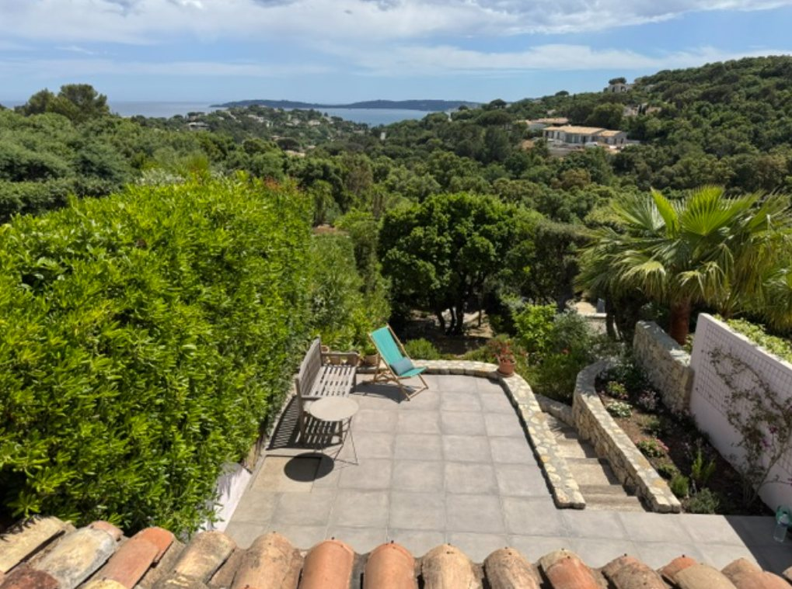

Umgebung

In der Umgebung
Der Strand von Guerrevieille und sein Restaurant sind nur wenige Minuten mit dem Auto oder E-Bike entfernt; der Zugang zum privaten Strand der Anlage ist gegen Aufpreis möglich. Der Golfplatz Beauvallon liegt gleich nebenan. Auch das Zentrum von Sainte-Maxime mit seinen Märkten und dem Hafen, von dem die Boote nach Saint-Tropez fahren, ist ganz in der Nähe.